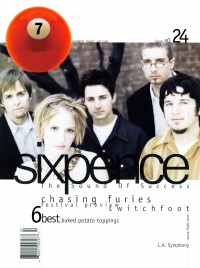

CMnexus: Contemporary Christian culture, music, and media.
|
|
Sixpence None the RicherOn the cover|  | May 1999
7ball | Media coverage:- Oct 1993 in CCM "Faces: Sixpence None the Richer", by Rich Stevens
- Jan 1994 in The Lighthouse "Sixpence None the Richer", by Beth Blinn
- 1995 in Syndicate "Sixpence None the Richer", by Chris Well
- Jun 1995 in CCM "Undefined Wealth", by Melissa Riddle
- Jan 1996 in 7ball "Sixpence None the Richer"
- Feb 1996 in Campus Life "Surprised By Joy", by Jim Long
- Mar 1996 in Campus Life "Women Who Rock"
- Sep 1996 in CCM "Conversations: This Beautiful Mess", by Jim Long
- Jun 1997 in CCM "In Concert: San Diego Sports Arena, San Diego, CA", by Dave Urbanski
- Sep 1997 in 7ball "None The Wiser?", by Doug Brumley
- Dec 1997 in CCM "Exit To Eden", by Gregory J Rumburg
- Sep 1998 in Campus Life "Faith In Tough Times"
- Sep 1998 in CCM "On The Beat: Sisterhood?", by Gregory J Rumburg
- Apr 1999 in Aspire "They've Got The (Christian) Music In Them"
- May 1999 in 7ball "Kiss and Tell", by Chris Well
- May 1999 in CCM "What Makes Music Christian?: Kiss and Tell", by Lucas W. Hendrickson
- Jan 2000 in CCM "Nine Moments that Defined the 90s: Sixpence None the Richer, lyrical debate", by Steve Rabey
- Mar 2000 in 7ball "Channelsurfing", by Kyle Minor
- 2 Oct 2000 in Christianity Today "Christianity Today Review: Slivers of Enlightenment", by Greg Clugston
- Sep 2002 in CCM "Beyond The Kiss", by Darrell A. Harris, Lisa Tedder
- Mar 2004 in CCM "Insider: Say It Isn't So", by Leigh Nash, Matt Slocum
- Jul 2005 in CCM "List-O-Rama: Blog Me A Little Blog: 5 Christian Artists Who Journal Online", by Chris Well
- Dec 2005 in CCM "List-O-Rama: 5 Proofs of the Secret Connection Between Christian Music & CS Lewis", by Chris Well
- Dec 2006 in CCM "List-O-Rama: Ho, Ho, Ho: 5 Christmas Songs of Note", by Chris Well
- Mar 2008 in CCM "What Now!: Sixpence None the Richer Makes A Comeback"
- Jul 2010 in Relevant "Culture: Hey, 2010: 1998 Wants Its Music Back"
- Sep 2010 in CCM Digital "In the Studio: Sixpence None the Richer", by Andrew Greer
- Sep 2012 in HM "Poster: Matt Slocum (Sixpence None the Richer)"
- Mar 2013 in CCM Digital "Tour Spotlight: Lost in Translation Tour, Space, Evanston, IL", by Andy Argyrakis
Albums & reviews:1993: The Fatherless and the Widow1995: This Beautiful Mess1995: Tickets for a Prayer Wheel1997: Sixpence None The Richer2002: Divine Discontent2004: The Best of Sixpence None the Richer2008: The Dawn of Grace2008: My Dear Machine2012: Lost in Translation Award Summary (Nominations / Wins)Dove Awards1998 Dove Awards- Recorded Music Packaging: Sixpence None The Richer
- Modern Rock/Alternative Album: Sixpence None The Richer
- Modern Rock/Alternative Recorded Song: "Love"
1999 Dove Awards2000 Dove Awards2003 Dove Awards- Group of the Year
- Modern Rock/Alternative Album: Divine Discontent
- Modern Rock/Alternative Recorded Song: "Breathe Your Name"
Grammy Awards1999 Grammy Awards- Best Pop Performance by a Duo or Group with Vocal: "Kiss Me"
Billboard Music Video AwardsBooks about Sixpence None the Richer- "Sixpence None the Richer" in The Encyclopedia of Contemporary Christian Music (Mark Allan Powell, 2002)
- "Sixpence None the Richer" in The Billboard Guide to Contemporary Christian Music (Barry Alfonso, 2002)
|